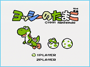
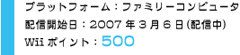
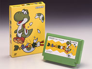
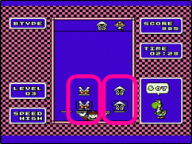
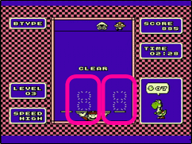
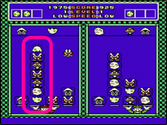
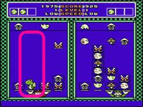

現在『ヨッシーアイランドＤＳ』で活躍中のヨッシーですが、初登場はなんと17年も前。1990年11月21日に発売されたスーパーファミコンソフト『スーパーマリオワールド』に、マリオの仲間として登場しました。そのヨッシーが初めて主役を演じたのが、翌1991年12月14日発売のファミコンソフト『ヨッシーのたまご』です。ゲームボーイ版も同時発売で、いわゆる落ちモノ系のパズルです。
以降ヨッシーの名を冠したパズルゲームは2作品発売され、『ヨッシーのクッキー』と『ヨッシーのパネポン』があります。この2作品はゲームキューブソフト『ＮＩＮＴＥＮＤＯ
パズルコレクション』でリメイクされるのですが（ヨッシーのパネポンではなく、厳密にはパネルでポンがリメイクされたのですが）、『ヨッシーのたまご』に関しては、バーチャルコンソールで配信されるまではファミコンかゲームボーイでしか遊ぶことができず、今回が久々の登場となります。
 |
2006年12月号に引き続き、今号でもバーチャルコンソールの紹介をしたいと思います。今回は編集長オススメのソフト、先月に配信が開始されたばかりの『ヨッシーのたまご』と『ドンキーコングJR.の算数遊び』の2本をご紹介。どちらのソフトも非常に対戦の面白いソフトです。今後も不定期ですがバーチャルコンソールソフトを取り上げていきますね。 |
|  |  |

|
基本ルールは「キャラを2体タテに並べて消す」です。上からクリボーやテレサなどおなじみの敵キャラクターが降ってくるので、下のトレーに積み上げていきます。積んだキャラとその下にいたキャラが同じであれば、そのキャラが消えるので、下のトレー動かしてクリボー同士やテレサ同士などが重なるようにうまく操作します。（ちなみに、マリオがトレーを回す役をしています。） |
 |
またこのゲームの肝となるのが、タイトルにもなっているヨッシーの「たまご」。敵キャラクターに混じって時折降ってくるのですが、上半分と下半分に分かれています。下半分のたまごのかけらの上に、上半分のたまごのかけらを乗せるとたまごが完成、中からヨッシーが誕生します。このたまごには特別な効果があり、下半分のたまごの上に敵キャラクターを乗せて、その上に上半分のたまごのかけらを乗せると、間にいたキャラたちをたまご中にはさみこんで消してしまうことができます。はさんだキャラが多ければ多いほど、誕生するヨッシーが大きくなり、普通に消すよりも得点がアップします。ただし、たくさんのキャラをはさもうとして、積み上げすぎてしまうとゲームオーバーになるので要注意！ |
 |
どんなゲームもそうですが、やはりみんなでワイワイ遊ぶのが一番楽しいものです。ヨッシーのたまごであれば、Ｗｉｉリモコンが2つあれば対戦プレイが楽しめます。どちらが先に手元のトレーにいるキャラを全て消すことができるかを競い合うのですが、ここでも「たまご」がポイントです。たまごを使ってキャラを消すと、そのキャラを相手側に送り込むことができる、つまり邪魔することができるんですね。自分のトレーもきれいになるので一石二鳥です。たくさんはさんで消せば、その分相手も不利になりますが、なかなかたまごが作れずにゲームオーバーになってしまう、なんてこともあります。多少運の要素も絡みますが、この駆け引きが面白いんですね。 |